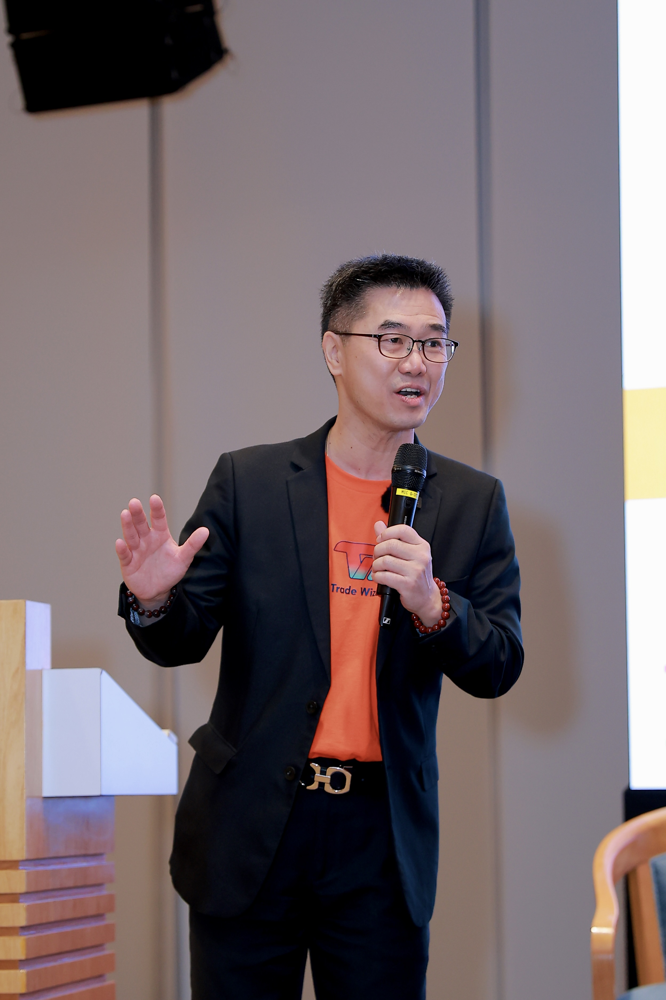
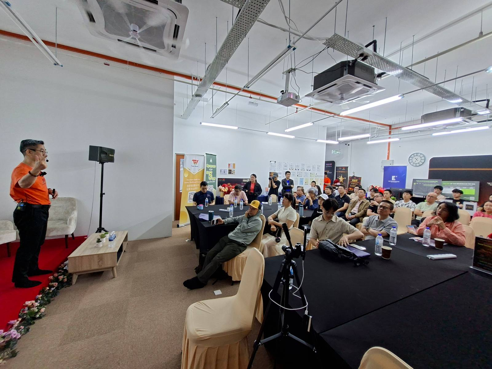

Master the art of short-term trading on Bursa Malaysia stocks — with live market training, real trades, and strategies that work in the Malaysian market.
New to trading? Learn the fundamentals from a former Bursa Malaysia Head who breaks down complex concepts into simple, actionable steps. No prior experience needed.
Looking for a structured way to generate side income from the market? Learn disciplined, risk-managed strategies designed for capital preservation and consistent returns.
Already trading but want to sharpen your edge? Master advanced technical analysis, live market reading, and the "street smart" knowledge you won't find in any textbook.
This isn't a PowerPoint course. You'll learn through live chart analysis, real trade breakdowns, and hands-on market practice — the way professional traders actually learn.

Most courses teach theory. I teach from live markets — real charts, real trades, real mistakes, and real thinking processes. Over 100 live trading sessions conducted.

Your journey doesn't end after the class. We provide ongoing support to ensure you succeed.
Well-designed, comprehensive curriculum covering fundamentals to advanced strategies. You can re-sit courses for revision.
Watch real trades happen in real-time. Learn how professional traders think and act during market hours.
Start your day with pre-market analysis and end with a recap. Continuous learning, every trading day.
AI-powered stock screener, real-time scanner, and analytics tools to help you find and execute trades faster.
Join our active trading community. Share ideas, get feedback, and learn alongside fellow traders.
As a certified HRD Corp training provider, our courses are claimable for eligible participants.
"For those who want to master Intraday Trading skills, TED Optimus & Warren provide a very practical & intensive training on day trading."
"I have zero knowledge of technical and chart analysis before I join TED Optimus. But with the Trade Wizard platform... I'm still in the learning process. I'll definitely continue the journey together with TED Optimus."
"They are Professional trainers who can sharpen your trading skill from Swing to intraday and street smart knowledge which you can't get from books. Worth to join them."
Join my free live webinar and discover how structured, data-driven trading can transform your financial future.